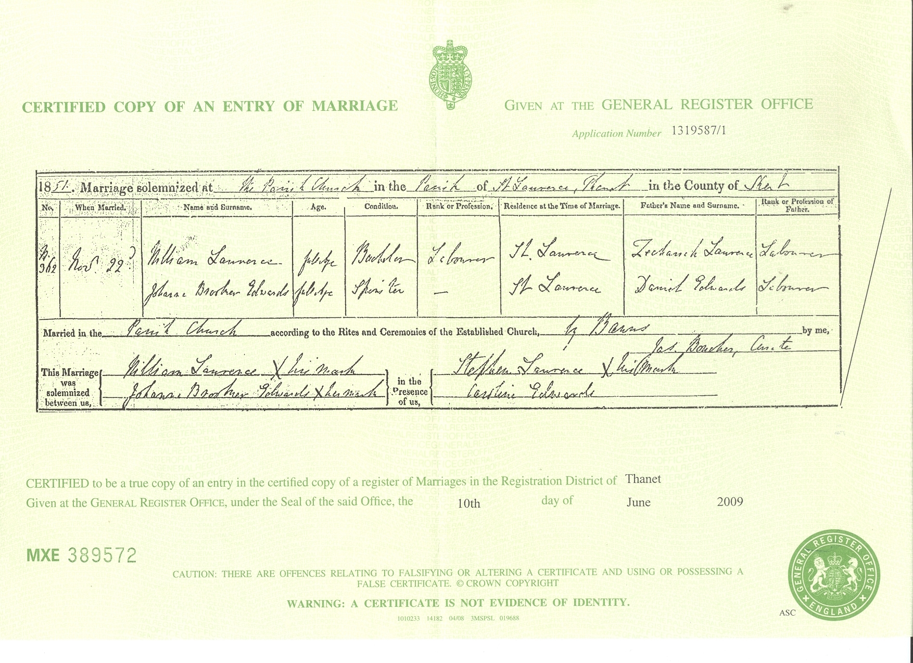
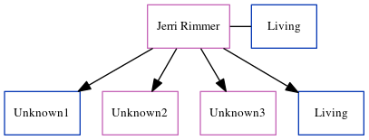

William Lawrence c1827 - 1898
[ Home ] | [ Calendar ] | [ Surnames Index ] | [ Errors ] | [ Family History ]A harbour labourer and the child of Zechariah Lawrence (a labourer) and Ann Cooper, William Lawrence, the great-great-grandfather of Nigel Horne, was born in Word in Worth, Sandwich, Kent, England c. 18271,2,3,4,5, was baptised in Woodnesborough, Kent, England on 5 Aug 1827 and was orphaned in 1833 by the death of both parents in that year her.
He married Johanna Edwards (with whom he had 11 children: George, Mary Carter, William, John, Annie, Elizabeth, Daniel, James, Hannah, Jane and Emily, along with 2 surviving children) in St Lawrence, Thanet, Kent, England on 22 Nov 18517During his life, he was living in Preston, Kent, England in 1841; on Chapel Lane, St Lawrence in Thanet on 7 Apr 186110; at Rear of Southwood Lodge, St Lawrence in Thanet on 2 Apr 18719; and at 3 Providence Cottage, St Lawrence in Thanet on 5 Apr 18914 - less than a mile from his great-niece Emily Lawrence who was living at 10 Claremont Gardens, Ramsgate, Kent and his nephew James Lawrence who was living at 10 Claremont Gardens, Ramsgate, Kent -.
He died on 11 Jun 1898 at 1 Pear Tree Cottages, St Lawrence in Thanet5,6 (morbis Cordis) and was buried there on 15 Jun 18988.
Parents
- Zechariah was born c. 1784
- Ann was born c. 1780
Children
- George was born c. 1851
- John was born c. Feb 1855
- Annie was born c. 1858
- Elizabeth was born c. Feb 1859
- Daniel was born c. Aug 1861
- James was born on 29 Jul 1863
- Hannah was born c. Jul 1865
- Jane was born on 4 Feb 1868
- Emily was born c. Aug 1869
Citations
- 1841 England Census Online publication - Provo, UT, USA: The Generations Network, Inc., 2006.Original data - Census Returns of England and Wales, 1841. Kew, Surrey, England: The National Archives of the UK (TNA): Public Record Office (PRO), 1841. Data imaged from the National
- 1861 England Census Online publication - Provo, UT, USA: The Generations Network, Inc., 2005.Original data - Census Returns of England and Wales, 1861. Kew, Surrey, England: The National Archives of the UK (TNA): Public Record Office (PRO), 1861. Data imaged from the National
- 1871 England Census Online publication - Provo, UT, USA: The Generations Network, Inc., 2004.Original data - Census Returns of England and Wales, 1871. Kew, Surrey, England: The National Archives of the UK (TNA): Public Record Office (PRO), 1871. Data imaged from the National
- 1891 England Census Online publication - Provo, UT, USA: The Generations Network, Inc., 2005.Original data - Census Returns of England and Wales, 1891. Kew, Surrey, England: The National Archives of the UK (TNA): Public Record Office (PRO), 1891. Data imaged from The National
- England & Wales, FreeBMD Death Index: 1837-1915 Online publication - Provo, UT, USA: The Generations Network, Inc., 2006.Original data - General Register Office. England and Wales Civil Registration Indexes. London, England: General Register Office. © Crown copyright. Published by permission of the Cont
- England & Wales, National Probate Calendar (Index of Wills and Administrations),1861-1941 Online publication - Provo, UT, USA: Ancestry.com Operations Inc, 2010.Original data - Principal Probate Registry. Calendar of the Grants of Probate and Letters of Administration made in the Probate Registries of the High Court of Justice in England. Londo
- England & Wales, FreeBMD Marriage Index: 1837-1915 Online publication - Provo, UT, USA: The Generations Network, Inc., 2006.Original data - General Register Office. England and Wales Civil Registration Indexes. London, England: General Register Office. © Crown copyright. Published by permission of the Cont
- rootsweb
- 1871 England, Wales & Scotland Census - Findmypast (was age 43 and the head of the household I don't know if this is this same William Lawrence. But given that both of his parents died when he was 6 this is possible since at age 14 he's not with an adult. But if that is him, where was he between the ages of 6 and 14?)
- 1861 England, Wales & Scotland Census - Findmypast (was age 33 and the head of the household)
Media
William Laurance - Johanna Brooker Edwards - marriage certificate

William Lawrence - death certificate

Canterbury Marriages - GBPRS/CANT/M/97021373/2
1871 England, Wales & Scotland Census Transcription - GBC-1871-0014304082
England Marriages 1538-1973 - R_848394699
Canterbury Marriages - GBPRS/CANT/M/97021373/1
England & Wales marriages 1837-2008 - BMD/M/1851/4/HZ/000308/022
England & Wales deaths 1837-2007 - BMD/D/1898/2/AZ/000206/236
Family Tree
Map
Generated by ged2site. Last updated on Jul 3, 2024
Known Issues
Residence record for 1841 contains no citation
1841: Not living with either parent in childhood when aged 14
Census information missing between Census UK 1841 and Census UK 1861
Census information missing between Census UK 1871 and 1891 England Census